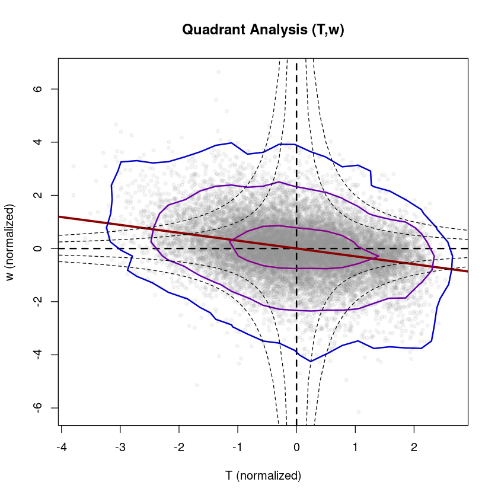

4 Quadrant analysis
Quadrant analysis is a simple conditional sampling method to detect coherent structures directly from the high-frequency measurements (e.g. Katul et al. (1997)) or simulations (e.g. Wallace (2016)). Coherent structures maintain their structure for a significant time period, and due to their coherence, they can generate deviations from mean flow properties (e.g. Jimenez (2018)). For quadrant analysis a scatter plot of a pair of two variables is considered, which are normalized through
\[ \hat{x} = \frac{x-\overline{x}}{\sigma_x}\]
by substracting the mean value \(\overline{x}\) and dividing by \(\sigma_x\) to make different variables with different value ranges comparable and centered around zero. Based on this, strength \(S_i\) and duration \(D_i\) of each quadrant (\(i=1, ..., 4\)) can be calculated:
\[ S_i = \frac{\overline{\hat{x}'\hat{w}'}_i}{\overline{\hat{x}\hat{w}}}, \quad\quad D_i = \frac{1}{t_s} \int_0^{t_s} I_i(t) dt\]
\(S_i\) represents the relative strength of the respective quadrant (normalized by the total covariance) and \(D_i\) the occurrence frequency of each quadrant (with averaging time \(t_s\) and indicator function \(I_i\)). To get an overall measure for the contribution of disorganized (i.e. counter-gradient contribution) versus organized (i.e. down-gradient contribution) structures, the exuberance \(E\) (Shaw, Tavanger, and Ward 1983) and the organization ratio \(OR\) (Mack et al. 2024) can be defined as:
\[ E = \frac{S(disorganized)}{S(organized)}, \quad\quad OR = \frac{D(disorganized)}{D(organized)}\]
For example, for the sensible heat flux warm updrafts and cold downdrafts are the organized structures, and oppositely cold updrafts and warm downdrafts the disorganized ones (in the figure below, organized structures are shaded and disorganized are not shaded).
To filter out particularly strong coherent structures, a hole size can be applied with the filter conditions \(\vert \hat{x}\hat{y} \vert \le H \cdot \vert \overline{\hat{x}'\hat{y}'}\vert\) (hyperbolic curves in the figure). Usually, \(y\) is chosen to be the vertical velocity \(w\). The quadrant analysis is directly related to the fluxes by using the respective constituting quantities: \((u,w)\) for momentum flux, \((T,w)\) for sensible heat flux, \((q,w)\) for latent heat flux and \((c,w)\) for CO\(_2\) flux – as visualized in the figure (adapted from Mack et al. (2024)).

#loading Reddy package
install.packages("../src/Reddy_0.0.0.9000.tar.gz",repos=NULL,source=TRUE,quiet=TRUE)
library(Reddy)
#ec data files
dir_in="../data/ec-data_10Hz_raw"
files=list.files(dir_in,full.names=TRUE)
nf=length(files)4.1 Calculation of occurrence frequencies and strengths of the four quadrants with calc_quadrant_analysis
To perform quadrant analysis, Reddy provides two functions: calc_quadrant_analysis for calculating occurrence frequency and strength of the four quadrants and plot_quadrant_analysis for plotting the two variables as scatter plot with a 2d kernel density estimation and a linear regression, as detailed below.
The function calc_quadrant_analysis counts the occurrence frequency of each quadrant, calculates their strength as product \(\hat{x}\hat{y}\) and as covariance \(\overline{\hat{x}'\hat{y}'}\). The argument do_normalization = TRUE can be used to normalize the two variables and with hole_sizes one or several hole sizes can be applied. The output is a list containing \(D_i\), \(S_i\) for every quadrant and hole size.
i=8 #select a file
tmp=read.table(files[i],sep=",",header=T)
qa_Tw=calc_quadrant_analysis(tmp$T_degC,tmp$w_m.s) #based on the raw data (10 Hz) directly (i.e., unrotated)
str(qa_Tw)List of 10
$ hole_sizes : int [1:11] 0 1 2 3 4 5 6 7 8 9 ...
$ occurrence : int [1:4, 1:11] 5448 2975 6619 2958 4689 144 3812 300 4232 8 ...
$ product : num [1:4, 1:11] 1.068 -0.291 0.619 -0.42 0.816 ...
$ covariance : num [1:4, 1:11] 0.10672 0.05309 -0.00914 0.03226 0.31902 ...
$ covariance_total : num 0.15
$ correlation_total : num 0.434
$ product_total : num [1:18000] 0.0448 -0.0544 -0.4983 0.115 0.3095 ...
$ exuberance : num [1:11] -0.422 -2.699 -5.521 -7.411 NaN ...
$ organization_ratio: num [1:11] 0.491672 0.052229 0.00992 0.002498 0.000495 ...
$ meta : chr "Output format: rows represent the quadrants Q1, Q2, Q3, Q4 -- columns represent selected hole sizes"4.2 Plotting quadrant analysis with plot_quadrant_analysis
plot_quadrant_analysis plots a scatter plot of two variables with a 2d kernel density estimation (MASS::kde2d) and a linear regression (lm()) to allow for a visual inspection.
Example: Quadrant Analysis (T,w) during daytime
i=8 #select a file -- a daytime example
print(files[i])
tmp=read.table(files[i],sep=",",header=T)
plot_quadrant_analysis(tmp$T_degC,tmp$w_m.s,xlab="T (normalized)",ylab="w (normalized)",main="Quadrant Analysis (T,w)")[1] "../data/ec-data_10Hz_raw/2018-07-20T120000.csv"
Call:
lm(formula = yval ~ xval)
Residuals:
Min 1Q Median 3Q Max
-4.5818 -0.5491 0.0005 0.5471 4.1136
Coefficients:
Estimate Std. Error t value Pr(>|t|)
(Intercept) -3.849e-16 6.716e-03 0.00 1
xval 4.337e-01 6.716e-03 64.58 <2e-16 ***
---
Signif. codes: 0 ‘***’ 0.001 ‘**’ 0.01 ‘*’ 0.05 ‘.’ 0.1 ‘ ’ 1
Residual standard error: 0.9011 on 17998 degrees of freedom
Multiple R-squared: 0.1881, Adjusted R-squared: 0.1881
F-statistic: 4170 on 1 and 17998 DF, p-value: < 2.2e-16
Example: Quadrant Analysis (T,w) during nighttime
i=38 #select a file -- a nighttime example
print(files[i])
tmp=read.table(files[i],sep=",",header=T)
plot_quadrant_analysis(tmp$T_degC,tmp$w_m.s,xlab="T (normalized)",ylab="w (normalized)",main="Quadrant Analysis (T,w)") #based on the raw data (10 Hz) directly (i.e., unrotated)[1] "../data/ec-data_10Hz_raw/2018-07-21T030000.csv"
Call:
lm(formula = yval ~ xval)
Residuals:
Min 1Q Median 3Q Max
-5.8334 -0.5262 0.0022 0.5425 6.2520
Coefficients:
Estimate Std. Error t value Pr(>|t|)
(Intercept) -3.006e-17 7.120e-03 0.00 1
xval -2.957e-01 7.121e-03 -41.53 <2e-16 ***
---
Signif. codes: 0 ‘***’ 0.001 ‘**’ 0.01 ‘*’ 0.05 ‘.’ 0.1 ‘ ’ 1
Residual standard error: 0.9553 on 17998 degrees of freedom
Multiple R-squared: 0.08745, Adjusted R-squared: 0.0874
F-statistic: 1725 on 1 and 17998 DF, p-value: < 2.2e-16
Example: Quadrant Analysis (u,w) during nighttime
plot_quadrant_analysis(tmp$u_m.s,tmp$w_m.s,xlab="u (normalized)",ylab="w (normalized)",main="Quadrant Analysis (u,w)") #based on the raw data (10 Hz) directly (i.e., unrotated)Call:
lm(formula = yval ~ xval)
Residuals:
Min 1Q Median 3Q Max
-5.9799 -0.5474 -0.0342 0.5301 6.6338
Coefficients:
Estimate Std. Error t value Pr(>|t|)
(Intercept) -3.749e-16 7.326e-03 0.00 1
xval -1.843e-01 7.326e-03 -25.15 <2e-16 ***
---
Signif. codes: 0 ‘***’ 0.001 ‘**’ 0.01 ‘*’ 0.05 ‘.’ 0.1 ‘ ’ 1
Residual standard error: 0.9829 on 17998 degrees of freedom
Multiple R-squared: 0.03395, Adjusted R-squared: 0.0339
F-statistic: 632.5 on 1 and 17998 DF, p-value: < 2.2e-16Quadrant analysis can be applied to any combination of two measured quantities and also allows to check the measurement quality or significance of the relation between them. It can also be used to check the effect of the coordinate rotation (e.g., rotate_double) visually. The concept can be extended to a combination of three variables in the framework of octant analysis.
References
Jimenez, J. 2018. “Coherent structures in wall-bounded turbulence.” J Fluid Mech 842 (P1). https://doi.org/10.1017/jfm.2018.144.
Katul, G., G. Kuhn, J. Schieldge, and C.-I. Hsieh. 1997. “The ejection-sweep character of scalar fluxes in the unstable surface layer.” Boundary-Layer Meteorol 83: 1–26.
Mack, L., T. K. Berntsen, N. Vercauteren, and N. Pirk. 2024. “Transfer Efficiency and Organization in Turbulent Transport over Alpine Tundra.” Boundary-Layer Meteorol 190 (38). https://doi.org/10.1007/s10546-024-00879-5.
Shaw, R. H., J. Tavanger, and D. P. Ward. 1983. “Structure of the Reynolds Stress in a Canopy Layer.” J Climate Applied Meteorol 22: 1922–31.
Wallace, J. 2016. “Quadrant Analysis in Turbulence Research: History and Evolution.” Annu Rev Fluid Mech 48: 131–58. https://doi.org/10.1146/annurev-fluid-122414-034550.